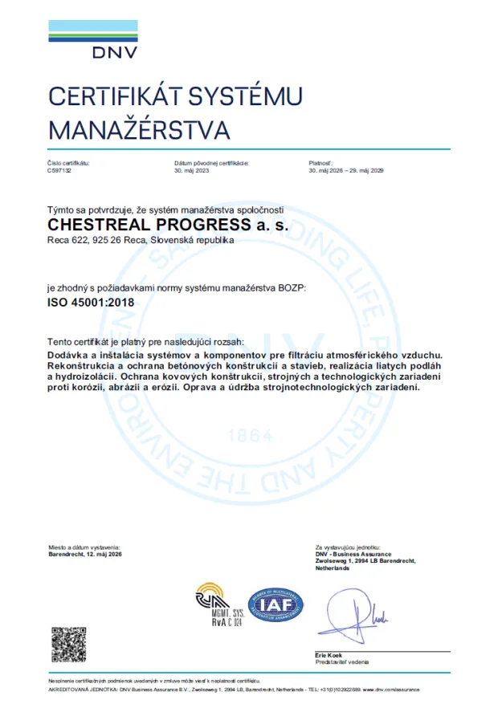

Filtrácia vzduchu
Filtre, mobilné a stacionárne zariadenia a rekonštrukcie filtračných systémov pre priemysel vrátane jadrových zariadení.
Zobraziť službyCHESTREAL PROGRESS a.s.
Spoločnosť pokračuje v tradícii Chestreal a.s., založenej v roku 1996, v oblasti filtrácie vzduchu, strojnej a stavebnej údržby.
Zákazník u nás dostane všetko z jednej ruky.
Náš prístup
Pri technickom probléme spoločnosť uvádza analýzu skutkového stavu, výber finančne a technicky optimálneho riešenia, prípravu postupu a dokumentácie, realizáciu aj následnú podporu.
Odborné zameranie
Štruktúra spája návrh, dodávku aj realizáciu a umožňuje riešiť viacero kritických oblastí priemyselnej údržby.
Filtre, mobilné a stacionárne zariadenia a rekonštrukcie filtračných systémov pre priemysel vrátane jadrových zariadení.
Zobraziť službyReprofilácia, izolácie, sekundárna ochrana konštrukcií, dilatácie a podlahové systémy do náročného prostredia.
Zobraziť službyOchrana konštrukcií a technologických zariadení proti korózii, erózii, abrázii, kavitácii a chemickým vplyvom.
Zobraziť službyKompetencie
Pôvodný web stavia hodnotu firmy na kombinácii kvalifikovaných pracovníkov, overených technologických postupov, certifikovaných materiálov a technickej dokumentácie.
IMS a etika
Politika integrovaného systému manažérstva a Etický kódex dodávateľov popisujú očakávania v oblasti kvality, bezpečnosti, životného prostredia a podnikateľskej integrity.
Priebežné zlepšovanie procesov, zvyšovanie spokojnosti zákazníkov a plnenie relevantných právnych a ostatných záväzných požiadaviek.
Riadenie rizík, prevencia poškodenia zdravia, motivovanie pracovníkov a zlepšovanie podmienok práce.
Prevencia znečistenia, minimalizácia nepriaznivých dopadov, zákaz podplácania, férová hospodárska súťaž a rešpektovanie ľudských práv.
Aktuálne zverejnené dokumenty
Platnosti sú uvedené podľa dokumentov dostupných na pôvodnom webe k dátumu prípravy návrhu.

Systém manažérstva bezpečnosti a ochrany zdravia pri práci.
Zobraziť dokumentPre dodávky zariadení na filtráciu atmosférického vzduchu; platnosť uvedená do 30. 4. 2028.
Zobraziť dokumentCertifikát účasti v systéme zberu, zhodnocovania a recyklácie odpadov z obalov.
Zobraziť dokumentAktuálne certifikáty ISO 9001 a ISO 14001. Dokumenty na pôvodnom webe uvádzajú platnosť len do 15. 7. 2025.
Kontakt
Pošlite základné parametre a dostupnú dokumentáciu.